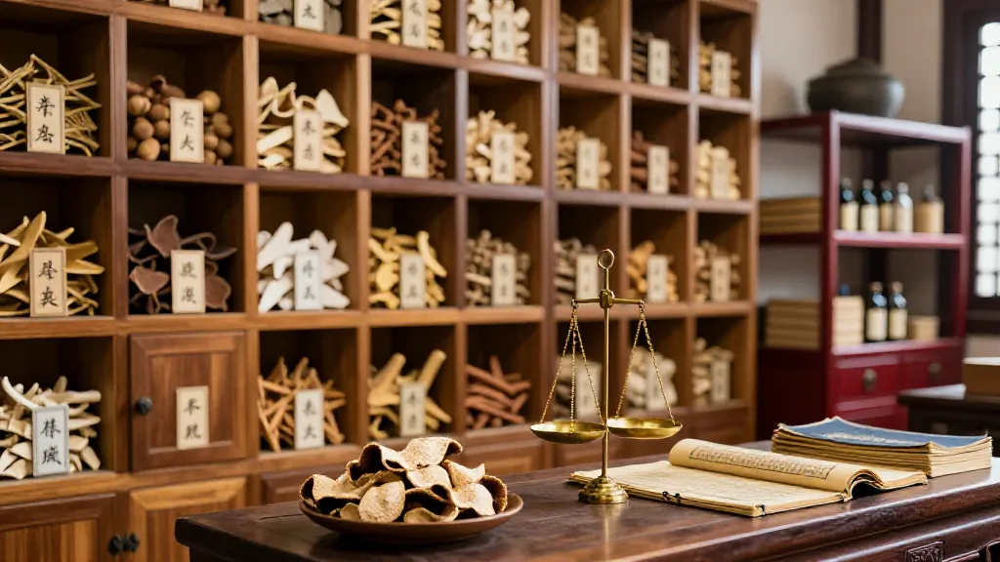
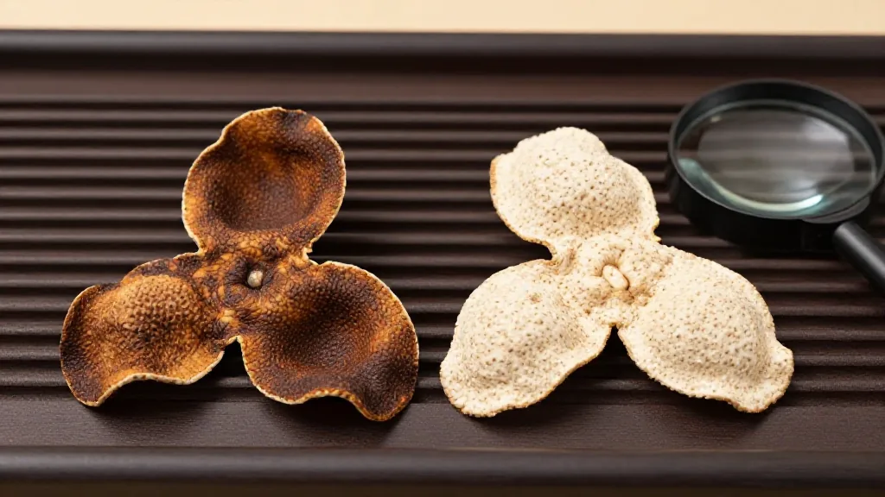

一片陳皮，一縷鄉愁
清晨的陽光透過老屋的窗櫺，灑在梁老先生手捧的一塊舊布包上。他小心翼翼地打開布包，裡面是三十年前女兒出生那年親手曬製的三瓣陳皮。歲月已將那層鮮亮的橙紅浸染成深沉的琥珀色，輕嗅一口，甘、香、醇、甜的氣息緩緩漫開。
「這是阿爸留給女兒的嫁妝，」梁老先生說，「女兒在美國，每年冬至她都會拿出這塊陳皮，泡一杯茶。她說，一聞到這股香氣，就像回到了新會。」
這並非個例。在新會，世代流傳著一個傳統：女兒出生當年，父母便開始為她曬製柑皮，陳化多年，待她出嫁時作為「陳皮女兒紅」隨嫁。這份嫁妝不僅價值連城，更承載著父母對女兒跨越時光的深情與祝福。
二〇二五年，一本承載千年陳皮文化的重量級志書——《新會陳皮志》正式出版發行，這是全国首部陳皮志，四十五萬字全景式記錄了新會陳皮從種植、加工到品牌塑造的完整鏈條。書中記載，新會是著名僑鄉，海外華人華僑、港澳台同胞回到家鄉探親，都以收到新會陳皮為榮，省親後攜帶陳皮回居住地，以解鄉愁。許多華僑都有一種說法：新會陳皮被帶到異國他鄉後，其發出的芳香特別濃郁，彷彿在訴說對故土的眷戀。
一枚小小的陳皮，就這樣成為了連接遊子與故鄉的無形紐帶。
從宮廷御藥到嶺南符號

新會陳皮的價值，並非近代才被發現。
翻開中醫藥典籍，清代太醫院記載慈禧太后以「新會皮」入藥的醫方，印證了其宮廷御用的顯赫身份。清代名醫葉天士開《二陳湯》時，特別注明要用「新會陳皮」。咸豐年間，三四十年陳皮被称作「不可得的珍品」。
「新會皮」何以如此尊貴？答案藏在這片土地的山水之間。
新會地處北回歸線以南，西江、潭江與南海鹹水在此交匯，形成獨特的「三水融通」水土結構；銀洲湖鹹淡水交融，三山環抱的微氣候高溫高濕，孕育出独一无二的大紅柑品系——茶枝柑。這種特殊的地理環境，是其他地方無法複製的。
新會陳皮的炮製技藝已於二〇二一年被列入國家級非物質文化遺產代表性項目，其流程包括採摘、開皮、反皮、翻皮、曬製、陳化，形成「三年育苗、三年掛果、三批採收、三個品種、三瓣開皮、三年曬皮、三級分皮、三年陳化、長久貯存」的獨特工藝。
未經三年以上陳化，不足以稱「陳皮」。年份越高，其理氣健脾、燥濕化痰的功效越发沉穩，這正是中醫藥「陳久者良」的古老智慧。
央視曝光之後：如何辨真假

然而，樹大招風。
二〇二五年底，央視財經《財經調查》欄目曝光了新會陳皮市場的重大亂象：廣西浦北有企業用「輕工藝」一個月速成「工藝皮」，以約七十元/斤的成本冒充新會陳皮，虛標三年、五年甚至十年年份，售價最高達一千元/斤，利潤超過十倍。部分商家從外地採購「工藝皮」，再貼上「新會陳皮」標籤轉手倒賣，令消費者真假難辨。
亂象令人痛心，卻也讓真正懂行的人更加珍視正宗新會陳皮的價值。筆者走訪新會核心產區，向當地老農請教，總結出五步辨別法：
一看外觀。 正宗新會陳皮三瓣相連，形狀規則，表皮有獨特的豬鬃紋，油室分佈均勻且密集，清晰可辨。內囊隨年份增加會自然脫落，呈現古樸質感。而外地皮或工藝皮形狀不規則，油室稀疏，內囊光滑，豬鬃紋不明顯。
二聞香氣。 正宗新會陳皮香氣醇厚，層次豐富——新皮有清新果香，年份漸高則散發陳香、藥香、樟香，複合而協調。假陳皮香氣寡淡，或刺鼻不自然，多為香精添加所至。
三摸質地。 新會陳皮質軟而韌，乾燥不粘手，年份越高韌性越明顯。造假陳皮質地偏硬偏脆，受潮後容易發黏。
四泡湯色。 正宗新會陳皮泡出的茶湯金黃透亮，年份短呈淺黃色，年份長則轉為橙黃、琥珀色，口感醇厚回甘。假陳皮湯色暗淡渾濁，入口苦澀，無回甘。
五嘗滋味。 優質新會陳皮入口微苦微甜，隨後回甘明顯，層次分明。假陳皮滋味寡淡，酸澀刺口，難以化開。
產地造假之外，年份虛標亦是重災區。新會陳皮的自然陳化成本高昂——每年6至11月晴天需曬5至6小時，其餘時間入庫乾倉，如此反覆三年方才成皮。速成工藝雖能模仿外觀，卻無法複製時間的沉澱。
值得欣慰的是，新會區政府已建成數字化溯源管理系統，為每塊陳皮賦予「身份證」，消費者掃描包裝二維碼即可查看產區、採摘時間、陳化年份等信息。同時，自二〇二五年一月一日起，新會區對未使用「新會陳皮」證明商標準卻冒充銷售的行為實施全面執法維權，守護這塊金字招牌。
陳皮養生：百搭王的食療智慧
拋開紛雜的市場，作為一味藥食同源的天然食材，新會陳皮的養生價值早已融入嶺南人的日常。
《本草綱目》記載：「同補藥則補，同瀉藥則瀉，同升藥則升，同降藥則降。」陳皮能和諸藥，使其發揮更佳效果，是中醫處方中的「和事佬」。現代藥理研究表明，新會陳皮富含揮發油、黃酮類化合物等活性成分，具有祛痰、促消化、抗氧化、抗菌消炎等作用。
日常養生，推薦幾款經典陳皮食療方：
陳皮紅豆沙。 紅豆浸泡後與陳皮同煮，熬至綿軟沙糯。陳皮的甘香中和紅豆的甜膩，健脾養胃，尤其適合女性秋冬調理。
陳皮老薑茶。 陳皮與老薑絲同泡，晨起飲用一碗，驅寒暖胃，適合脾胃虛寒、容易腹脹的人群。
陳皮茯苓茶。 陳皮配茯苓，沸水沖泡飲用。茯苓健脾滲濕，陳皮理氣化痰，二者合用，特別適合濕氣重、舌苔厚膩、容易疲倦的都市人。
陳皮梨湯。 雪梨切塊與陳皮同燉，加入適量冰糖，潤肺清熱、止咳化痰，秋冬乾燥季節尤為適宜。
不過，陳皮性溫，體質偏熱者不宜過量飲用，以免上火。每次用量3至5克足矣，可反覆沖泡至味淡。
一塊陳皮，撬動百億產業
二〇二四年，新會陳皮全產業鏈產值達二百六十一億元，帶動逾七萬八千人就業，從業者人均年增收約二萬六千元。新會陳皮連續三年位居「中國區域農業產業品牌影響力指數」榜首，新會區獲授「中國陳皮之都」稱號。
二〇二五年，供銷（江門）新會陳皮產業園正式開業，集冷鏈物流、精深加工、智慧倉儲、品牌營銷、文化展示於一體，推動產業從傳統種植向標準化、數字化全面升級。同年九月，「新會陳皮出海賦能千億產業」發布會召開，攜手區塊鏈「一物一碼」溯源技術和權威品質認證，為新會陳皮走向世界鋪路。
海歸博士打造智慧無人倉，香港青年通過跨境電商將陳皮柑茶銷往歐美，新會陳皮正從嶺南小城出發，飄香四海。
陳香不散，歲月留聲
回到梁老先生的故事。他的女兒遠在大洋彼岸，每年冬至隔著時差與父母視頻，鏡頭前各自泡一杯陳皮茶，隔空舉杯。
一枚陳皮，從新會的柑園出發，經陽光與時光的共同雕琢，最終落在千里之外遊子的茶盞裡。它或許會碎成細絲，會褪去最後一絲鋒芒，但那股甘香——來自北回歸線以南的鹹淡水土，來自祖輩傳承的匠心，來自故鄉泥土的氣息——永遠不會消散。
正如新會民間那句老話：「千年人參，百年陳皮。」陳皮承載的不只是藥效與風味，更是一種關於時間、關於等待、關於故鄉的古老智慧。
願每一塊正宗的新會陳皮，都能找到懂它的人；願每一縷陳香，都能慰藉一份思念。